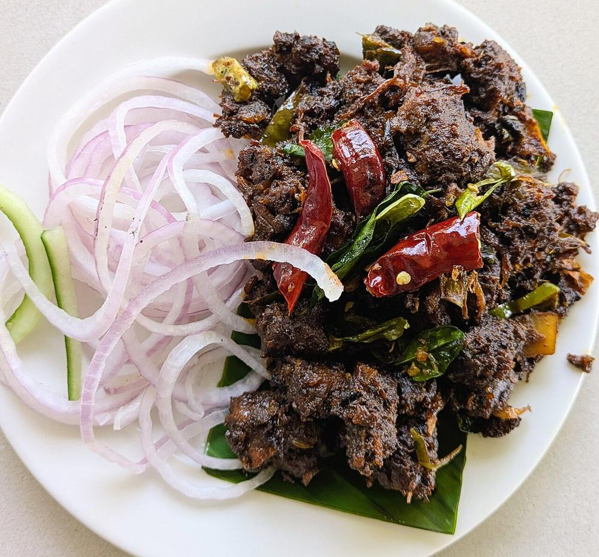

Beef Ularthiyathu
slow-fried beef in dark pepper masala with coconut slivers and a raft of curry leaves

Allergens: none of the ten listed below
Ingredients
Quantities for 4.
- 700g, cut into 2cm cubes Beefchuck or shin, with some fat
- 1/2 cup, cut into thin slivers Coconutnot grated, slivers
- 12, sliced Shallot
- 2 tbsp, chopped fine Ginger
- 8 cloves, chopped fine Garlic
- 3, slit Green Chillioptional
- 2 tsp, coarsely crushed Black Pepper
- 2 tbsp Coriander Powder
- 1 tsp Chilli Powder
- 1 tsp Turmeric
- 1 tsp Fennel Powder
- 1 tsp Garam MasalaKerala meat masala if you have it
- 4 Clovesoptional
- 1 piece Cinnamonoptional
- 1 tsp Vinegaroptional
- 4 sprigs Curry Leavesa genuinely large amount
- 4 tbsp Coconut Oil
- to taste Salt
Cookware
stovetop, pressure cooker, kadhai
Checked against the ingredient list for ten allergens: milk, egg, fish, crustaceans, tree nuts, peanuts, sesame, mustard, soy and gluten. Brands vary, so read the label on anything new to you.
Before you start
- Marinate the beef 30 minutes with the turmeric, chilli powder, coriander powder, half the pepper, the vinegar and salt.
- Ularthiyathu means roasted or fried down. The dish is finished when the gravy has gone entirely and the meat is coated in dark clinging masala. Budget the time for it.
- Slice the coconut into slivers rather than grating it. Grated coconut disappears; slivers stay and go crunchy.
Method
- Pressure cook the marinated beef with 1/2 cup water and the whole cloves and cinnamon for 4 whistles, then 15 minutes on low. Release naturally.If the beef is still chewy, give it 2 more whistles now. You cannot fix tough meat in the frying stage.
- Meanwhile, heat 2 tbsp coconut oil in a wide kadhai and fry the coconut slivers over medium heat for 3 minutes until golden. Lift out and set aside.
- In the same oil add the shallots, ginger, garlic and green chillies. Cook 8 minutes until the shallots are deep brown at the edges.
- Add the fennel powder, garam masala and remaining pepper and fry 1 minute until the oil smells of fennel.
- Tip in the cooked beef along with any liquid from the cooker. Raise the heat and boil hard, stirring, for 8-10 minutes until the liquid has gone.
- Add the remaining 2 tbsp coconut oil and turn the heat to medium-low. Now fry the beef, stirring every couple of minutes, for 20-25 minutes.This is the whole dish. The meat should go from brown to near-black and the masala should look dry and crusted.
- Scrape the crust off the base of the pan back into the meat every few minutes. That is where the flavour is.If it catches too hard, a tablespoon of water will lift it. Let it dry again before adding more.
- Throw in all four sprigs of curry leaves and the fried coconut slivers. Fry 2 minutes more until the leaves crisp and shatter.
- Rest off the heat 5 minutes and serve with kappa or porotta.
Safe temperatures: Whole cuts of mutton, beef and pork are done at 63°C / 145°F, rested 3 minutes. A long braise passes that well before the meat is tender. Reheat leftovers to 74°C / 165°F. FoodSafety.gov
Storage
Keeps 4 days refrigerated and is better on day two. Reheat in a dry pan over medium heat for 5 minutes to bring the crust back; it will not need extra oil.
Nutrition Medium estimate
High protein: 42 g a serving, 39% of the calories
| Per serving228 g | Per 100 g | |
|---|---|---|
| Calories | 434 kcal | 191 kcal |
| Protein | 42.0 g | 18 g |
| Carbohydrate | 10.0 g | 4 g |
| of which sugars | 1.1 g | 0 g |
| Fibre | 4.0 g | 2 g |
| Fat | 25.0 g | 11 g |
| of which saturated | 16.8 g | 7 g |
| of which unsaturated | 5.3 g | 2 g |
Ingredients given to taste count as zero, so the real figures run a little higher. Nearest database match used for curry leaves, garam masala. Estimated from raw ingredients using USDA FoodData Central.
More like this: Gluten-free Indian recipes · Dairy-free Indian recipes · Kerala recipes
Times, yields, allergens and nutrition are guidance. Use your own judgement on doneness and on storing. More in About.